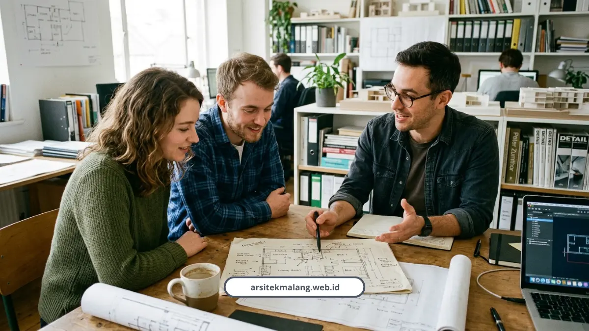

Ringkasan Inti
- Konsultasi arsitek Malang terstruktur dalam 5 tahapan transparan: konsep awal, visualisasi 3D, DED komplit, RAB transparan, hingga pendampingan PBG.
- Tahap konsep menggali brief kebutuhan ruang, gaya hidup, orientasi lahan, serta kriteria keandalan bangunan standar IAI.
- Visualisasi 3D fotorealistik hingga kualitas 4K dilengkapi kuota revisi terstruktur agar ekspektasi desain sejalan sebelum fisik dibangun.
- Gambar kerja teknis DED komplit dan RAB transparan mengunci anggaran agar terhindar dari pembengkakan biaya di tengah jalan.
- Pendampingan berkas izin PBG/SIMBG PUPRPKP Kota Malang memastikan kepatuhan regulasi dan meminimalisir risiko kendala administratif.
Daftar Isi Artikel
- Tahap 1, Apa yang Dibahas di Konsultasi Konsep Awal?
- Tahap 2, Bagaimana Proses Visualisasi 3D Fotorealistik Berjalan?
- Tahap 3, Apa Saja Isi Gambar Kerja Teknis (DED)?
- Tahap 4, Bagaimana RAB Disusun Supaya Transparan?
- Tahap 5, Bagaimana Pendampingan Izin PBG dan Pengawasan Konstruksi Berjalan?
- Apa yang Membuat Konsultasi Kami Berbeda?
- FAQ Seputar Konsultasi Arsitek Malang
Konsultasi arsitek Malang bersama tim kami berjalan lewat lima tahapan jelas, mulai dari analisis kebutuhan lahan, visualisasi 3D, gambar kerja DED, penyusunan RAB, sampai pendampingan izin PBG via SIMBG. Anda tahu persis ada di tahap mana proyek Anda setiap saat.
Saya sering menemukan orang yang takut konsultasi ke arsitek karena mengira prosesnya ribet dan mahal. Padahal kalau alurnya jelas dari awal, justru ini yang menyelamatkan Anda dari biaya membengkak di kemudian hari.
Berikut lima tahap yang akan Anda lalui kalau berkonsultasi dengan tim kami.
Tahap 1, Apa yang Dibahas di Konsultasi Konsep Awal?
Di tahap pertama, kami menggali brief kebutuhan ruang, gaya hidup penghuni, orientasi lahan, gaya arsitektur yang diinginkan, sampai alokasi anggaran Anda. Ini fondasi yang menentukan arah seluruh desain berikutnya.
Ar. Georgius Budi Yulianto, Ketua Umum Ikatan Arsitek Indonesia, menjelaskan bahwa desain arsitektur sekurang-kurangnya harus memenuhi lima kriteria utama, yaitu kekuatan struktur, kemudahan fungsional, keselamatan, kesehatan fisika bangunan, dan estetika. Ketika kelima kriteria ini terpenuhi, rancangan baru bisa dikatakan memenuhi standar keandalan bangunan.
Di tahap awal ini kami fokus khusus pada dua kriteria yaitu kemudahan fungsional dan kesehatan bangunan, seperti memastikan pencahayaan alami dan sirkulasi udara sudah optimal sejak konsep.

Tahap 2, Bagaimana Proses Visualisasi 3D Fotorealistik Berjalan?
Setelah brief disepakati, kami menerjemahkannya ke bentuk denah 2D dan visualisasi 3D eksterior maupun interior fotorealistik hingga kualitas 4K. Anda bisa melihat tampilan akhir bangunan secara presisi sebelum fisik bangunan berdiri.
Tahap ini juga dilengkapi kuota revisi terstruktur, jadi Anda tidak perlu khawatir hasil akhirnya jauh dari ekspektasi. Kalau Anda ingin tahu batas revisi dan skema pembayaran resminya secara detail, kami sudah jelaskan lengkap di artikel kontrak arsitek Malang soal termin pembayaran dan jaminan revisi.
Catatan Arsitek Malang
Menyiapkan daftar inventaris kebutuhan ruang serta gambaran kebiasaan keluarga sebelum sesi konsultasi awal akan sangat menghemat waktu eksplorasi konsep. Komunikasi yang terbuka mengenai estimasi pagu anggaran sejak awal membantu tim arsitek merancang desain yang realistis dan siap dieksekusi tanpa kompromi estetika.
Tahap 3, Apa Saja Isi Gambar Kerja Teknis (DED)?
Gambar kerja teknis atau Detail Engineering Design adalah berkas cetak biru lengkap yang jadi panduan utama tukang di lapangan. Tanpa DED yang detail, risiko kesalahan eksekusi di lapangan jauh lebih tinggi.
Berkas DED yang kami siapkan mencakup:
- Gambar arsitektur: denah, tampak depan-samping-belakang, potongan melintang/memanjang, detail kusen, pola lantai dan plafon
- Gambar struktur: detail rencana pondasi, kolom, pembalokan, dan pembesian
- Gambar MEP dan plumbing: titik penerangan, saklar, instalasi kelistrikan, serta saluran air bersih dan kotor
Tahap 4, Bagaimana RAB Disusun Supaya Transparan?
RAB disusun rinci berdasarkan spesifikasi material dan harga pasaran lokal Malang Raya, bukan asal tebak dari pengalaman proyek daerah lain.
Biaya perencanaan arsitek di Malang umumnya dihitung berdasarkan luas bangunan, berkisar Rp15.000 hingga Rp200.000 per meter persegi tergantung kompleksitas berkas, atau memakai skema persentase 5-8 persen dari total RAB.
Keberadaan RAB yang transparan ini mengunci anggaran Anda supaya tidak terjadi cost overrun di tengah jalan. Kalau Anda mau lihat gambaran contoh hasil desain nyata yang sudah kami kerjakan dengan skema serupa, cek portofolio desain rumah tropis modern kami untuk gambaran lebih konkret.
Tahap 5, Bagaimana Pendampingan Izin PBG dan Pengawasan Konstruksi Berjalan?
Tahap terakhir mencakup penyiapan berkas teknis untuk pengajuan Persetujuan Bangunan Gedung dan Sertifikat Laik Fungsi lewat portal SIMBG, dilanjutkan dengan pengawasan berkala di lapangan. Ini tahap yang paling sering bikin klien awam kebingungan sendiri.
Peralihan dari IMB menjadi PBG diatur dalam UU Nomor 11 Tahun 2020 tentang Cipta Kerja dan PP Nomor 16 Tahun 2021. Di Kota Malang, permohonan diproses lewat SIMBG dengan melibatkan Dinas PUPRPKP untuk aspek teknis dan Disnaker PMPTSP untuk aspek administrasi, berpedoman pada Perda Kota Malang Nomor 4 Tahun 2023 serta SE Wali Kota Malang Nomor 17 Tahun 2022.
I Made Riandiana Kartika, Ketua DPRD Kota Malang, menekankan pentingnya kelengkapan dokumen teknis arsitektur saat mengurus PBG, karena masih banyak masyarakat di Kota Malang yang mengalami kendala izin tertahan hingga berbulan-bulan akibat berkas perencanaan yang tidak memenuhi standar.
Sumiyati dan Indra, tim operator SIMBG Dinas PUPRPKP Kota Malang, mengungkapkan bahwa salah satu hambatan terbesar pelayanan perizinan bangunan di Malang adalah kurangnya pemahaman pemohon dalam mengunggah berkas teknis sesuai standar sistem SIMBG.
Risiko membangun tanpa PBG cukup serius, mulai dari sanksi administratif hingga sanksi pidana berupa penjara paling lama 3-5 tahun dan denda 10-15 persen dari nilai bangunan jika menimbulkan kerugian.
Setelah izin diproses, pengawasan berkala kami lakukan secara visual di lapangan untuk memastikan detail fasad, proporsi ruang, dan pemilihan material tetap presisi sesuai cetak biru 3D awal.
Apa yang Membuat Konsultasi Kami Berbeda?
Kelima tahap di atas kami jalankan secara berurutan dan terdokumentasi, jadi Anda selalu tahu progres ada di titik mana. Tidak ada tahap yang dilompati demi mengejar kecepatan, karena justru di situlah kesalahan sering terjadi.
Konsultasi tahap awal ini kami buka gratis, baik lewat WhatsApp maupun tatap muka langsung, tanpa komitmen apapun di awal. Kalau Anda sudah siap menjadwalkan sesi pertama, silakan langsung kunjungi halaman layanan kami di sini untuk pilih paket yang sesuai kebutuhan.
Lima tahapan ini bukan birokrasi yang sengaja dibikin panjang, tapi urutan logis yang justru melindungi Anda dari kesalahan mahal di lapangan. Dari konsep sampai izin PBG, setiap tahap punya fungsi yang saling menyambung.
Kalau Anda merasa masih awam soal proses ini, justru itu alasan tepat untuk mulai konsultasi lebih awal, bukan menundanya sampai semua terasa mendesak.
FAQ Seputar Konsultasi Arsitek Malang
Apakah Konsultasi Tahap Pertama Benar-Benar Gratis?
Benar, konsultasi konsep awal dan diskusi kebutuhan kami buka gratis tanpa biaya apapun, baik lewat WhatsApp maupun tatap muka langsung di kantor.
Berapa Kali Pengawasan Dilakukan Selama Proses Konstruksi?
Pengawasan berkala di lapangan umumnya dilakukan sekitar satu sampai dua kali per bulan, menyesuaikan progres dan kompleksitas pekerjaan konstruksi yang sedang berjalan.
Apa yang Terjadi Jika Berkas PBG Ditolak oleh SIMBG?
Berkas yang ditolak biasanya karena tidak memenuhi standar teknis yang disyaratkan sistem. Karena itu tim kami menyiapkan dokumen sesuai standar verifikasi SIMBG sejak awal untuk meminimalisir risiko penolakan dan keterlambatan proses izin.
Konsultasikan Proyek Impian Anda Bersama Arsitek Malang
Diskusikan kebutuhan tata ruang, visualisasi 3D photorealistic, RAB transparan, dan pendampingan PBG bersama tim arsitek berlisensi kami.

Naura Regyna Putri
Penulis & Tim Riset Arsitektur Maroon Arsitek Malang, spesialis alur kerja konsultasi arsitektur, perencanaan tata ruang, dan pengurusan izin PBG/SIMBG.